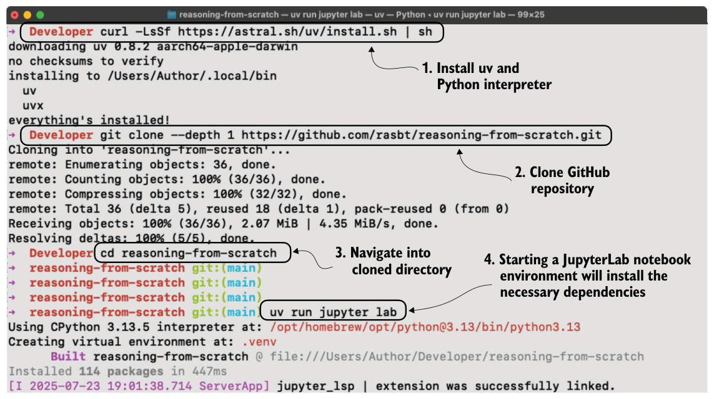

2.2Setting up the coding environment
We’ll look at two main ways to set up your Python coding environment so you can follow along with the examples in this book: a straightforward pip-based setup and a uv-based workflow. I recommend reading through this section before deciding which option is best for you. If you already have a Python environment set up (with Python 3.10 or newer), the simplest way to install dependencies is to use Python’s package installer (pip) in your terminal. If you have downloaded the code from the publisher’s website, use the requirements.txt file to install the Python libraries required for this book:
pip install -r requirements.txtAlternatively, to install the required packages directly without downloading the requirements.txt file, use this command:
pip install -r https://raw.githubusercontent.com/\
rasbt/reasoning-from-scratch/refs/heads/main/requirements.txtPython packages used in this chapter
pip install torch>=2.10.0 tokenizers>=0.22.2 reasoning-from-scratchtorchrefers to PyTorch, a widely used deep learning library that provides tools for building and training neural networks.tokenizersis a library that provides efficient tokenization algorithms used to prepare input data for LLMs.reasoning-from-scratchis a custom library that I developed for this book. It includes all the code examples used throughout the chapters, along with additional utility functions we will be using.
While pip is the canonical way to install Python packages, my preferred way to use
Python is with the widely recommended uv Python package and project manager instead. Like many others, I now recommend uv because it is significantly faster and handles dependency resolution more reliably than pip. It also creates isolated environments automatically and comes with its own Python executable (but will use the system Python if a compatible version is already installed), so it’s a great option if you do not have Python installed on your system yet. Figure 2.3 outlines the four-step process, from installing uv to getting ready to execute the code in this chapter.
Figure 2.3 shows the installation and use of uv in a macOS terminal, but it’s also supported on Linux and Windows:
1 To install uv, run the installer for your OS from the official website: https://docs.astral.sh/uv/getting-started/installation/.
2 Next, clone the GitHub repo:
git clone --depth 1 https://github.com/rasbt/reasoning-from-scratch.gitHere, the --depth 1 option tells git to perform a shallow clone, which means it only downloads the latest version of the code without the full version history. This makes the download faster and uses less space.

If you don’t have git installed, you can manually download the source code repository from the publisher’s website or by opening this link in your browser: https://github.com/rasbt/reasoning-from-scratch/archive/refs/heads/main.zip (unzip it after downloading).
3 In the terminal, navigate to the reasoning-from-scratch folder.
4 Inside the reasoning-from-scratch folder, execute
uv run jupyter labThis command launches JupyterLab, where you can open a blank Jupyter notebook to type and run code, or you can open the chapter 2 notebook that contains all the code covered in this chapter. (You don’t need to create or activate a virtual environment first.)
Python script files can be executed via uv run script-name.py. This command also sets up a local virtual environment (usually inside an invisible .venv/ folder) and automatically installs all dependencies from the pyproject.toml file in the reasoning-from-scratch folder, so manually installing code dependencies via the requirements file is not needed. However, if you plan to install additional packages, you can use the following command:
uv add packagenameThe supplementary code repository contains additional installation instructions and details inside the ch02 subfolder if you need them.